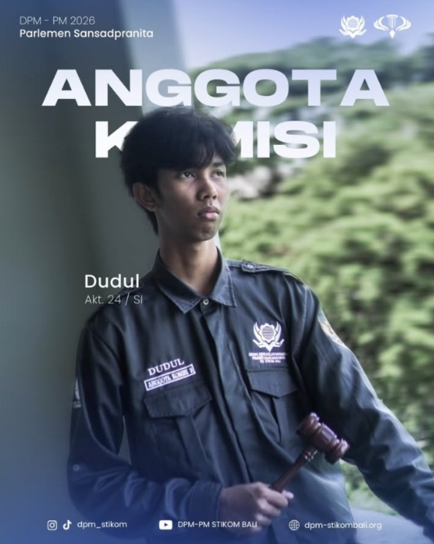

dudul@itbstikom:~$ whoami
agent_dudul
Mahasiswa Sistem Informasi ITB STIKOM Bali yang menemukan minat di jaringan komputer sejak SMK, lalu memperluasnya ke web development dan AI automation sejak Maret 2026. Aktif di organisasi kemahasiswaan, dan aktif lagi membuat konten sejak 2025 setelah sempat vakum.
Halo, saya Dudul
Si Penjelajah Digital
about
Tentang Saya
Latar belakang pendidikan, pengalaman kerja, dan karya digital.
Saya lulusan Jurusan Multimedia di SMK Pariwisata Harapan (2024) dan sekarang melanjutkan kuliah di ITB STIKOM Bali, Program Studi Sistem Informasi. Sebenarnya saya ingin masuk Sistem Komputer karena minat saya di jaringan tumbuh sejak SMK, lebih besar daripada minat saya di multimedia, tapi orang tua tidak merestui jurusan itu sehingga saya memilih Sistem Informasi sebagai jalan tengah antara jaringan, web, dan bisnis.
Selama SMK saya magang sebagai fotografer di Sosuit Bali, lalu sempat bekerja sebagai staff outdoor di LAZISNU. Saya juga aktif sebagai anggota Komisi 2 (Hukum & Advokasi) di Dewan Perwakilan Mahasiswa ITB STIKOM Bali, pengalaman yang melatih komunikasi, tanggung jawab, dan cara melihat masalah dari sisi manusia.
Bekal multimedia dari SMK membantu saya memahami desain grafis dan produksi konten, sementara kuliah Sistem Informasi memperkuat arah belajar saya di web, backend, jaringan, dan sejak Maret 2026 juga AI automation lewat OpenClaw, kemudian Hermes sejak Agustus 2026.
Di luar projek teknis, saya membangun identitas konten kreatif sejak 2020. Sempat vakum, lalu aktif kembali di 2025 lewat akun @agent_dudul di Instagram dan TikTok.
Sosuit Bali
Magang sebagai fotografer, semasa SMK.
LAZISNU
Staff outdoor.

skills
Keahlian & Minat
Networking
Minat paling lama, tumbuh sejak SMK, lebih besar daripada minat saya di multimedia. Merancang dan mengelola jaringan untuk kebutuhan rumah, usaha, dan server lokal.
Web Development
Membangun website dan aplikasi web yang responsif, terstruktur, dan mudah dikembangkan.
AI & Machine Learning
Skill paling baru, dimulai Maret 2026 lewat OpenClaw, lalu Hermes sejak Agustus 2026. Membangun AI Agent dan workflow otomatis untuk pekerjaan digital harian.
Konten Hiburan
Aktif membuat konten sejak 2020, sempat vakum, lalu aktif lagi di 2025 dengan akun baru @agent_dudul. Dari ide meme sampai video pendek.
projects
Proyek Pilihan
hotspot internet usaha
Project pertama saya, dibuat semasa SMK sebelum lulus 2024. Halaman hotspot trial di MikroTik yang menampilkan profil usaha Warung Bu Rizky (usaha orang tua saya) saat pelanggan masuk ke jaringan internet, dipakai untuk promosi dan informasi usaha. Sudah tidak berjalan; kode tersimpan sebagai arsip.
ai agent development
Titik awal saya belajar AI automation, Maret 2026, lewat OpenClaw. Dari sini saya membangun portofolio ini, Warung Bu Rizky, Aspirasi Mahasiswa, bot stiker, dan integrasi berbagai perangkat. Sejak Agustus 2026 saya beralih memakai Hermes untuk membangun dashboard, merevisi agentdudul.my.id, EventCosBali, EkaPorto, dan menyempurnakan integrasi seluruh perangkat saya (sokai-white, sokai-black, sokai-gray). Ekosistem ini masih aktif dan terus berkembang sampai sekarang.
website aspirasi mahasiswa
Dibuat Juli 2026 dengan OpenClaw. Awalnya saya ingin membangun sistem aspirasi dua arah yang lengkap untuk Komisi 2 Hukum & Advokasi DPM ITB STIKOM Bali, tapi struktur itu belum bisa direalisasikan sepenuhnya. Sekarang platform ini berjalan sebagai arsip aspirasi: mengumpulkan dan mengelola masukan mahasiswa sebelum forum dialog dua sisi diadakan langsung.
warung bu rizky
Dibuat akhir Juli sampai awal Agustus 2026 dengan OpenClaw, untuk usaha orang tua saya sendiri. Orang tua saya sering lupa mencatat daftar harga dan hutang pelanggan secara manual, jadi aplikasi ini dibangun untuk menyimpan semuanya di satu tempat: produk, kategori, hutang, dan belanja stok. Berjalan di Raspberry Pi dengan database SQLite dan dipublikasikan lewat Cloudflare Tunnel di domain WBR.
landing page agent dudul
Utilitas fitur pertama saya di ekosistem Agent Dudul, dibuat Agustus 2026. Landing page publik yang menghubungkan seluruh layanan dan alat digital Agent Dudul lewat domain agentdudul.my.id, dan menjadi fondasi sebelum dashboard serta fitur-fitur lain dibangun di atasnya.
dashboard agent dudul
Dibangun pertengahan Agustus 2026, setelah saya mulai memakai Hermes. Ini project favorit sekaligus paling sulit yang pernah saya kerjakan, karena harus merancang RBAC (role-based access control) yang menghubungkan beberapa sistem berbeda sekaligus, bukan cuma satu aplikasi. Panel internal ini memantau seluruh ekosistem Agent Dudul: status server, catatan operasional, dan administrasi harian lewat dashboard.agentdudul.my.id.
eventcosbali
Dibangun pertengahan sampai akhir Agustus 2026 dengan Hermes. Platform event Bali dengan website publik dan panel pengelola terpisah, deployment berjalan di Raspberry Pi memakai subdomain eventcosbali.agentdudul.my.id dan kelola-eventcosbali.agentdudul.my.id.
ekaporto
Project terbaru saya, dibangun awal September 2026 dengan Hermes. Website portofolio kreatif untuk menampilkan karya Eka dalam galeri visual yang rapi dan responsif. Data karya terhubung ke API kelola-ekaporto, sehingga perubahan dari panel admin dapat langsung ditampilkan kepada pengunjung.
contact
Hubungi Saya
Terbuka untuk belajar, kolaborasi, dan projek kecil yang menarik.
Silakan hubungi lewat kanal di bawah ini. Saya paling aktif di Instagram dan TikTok.